别再反复重装 OpenClaw 了，第一次最容易卡住的根本不是安装命令
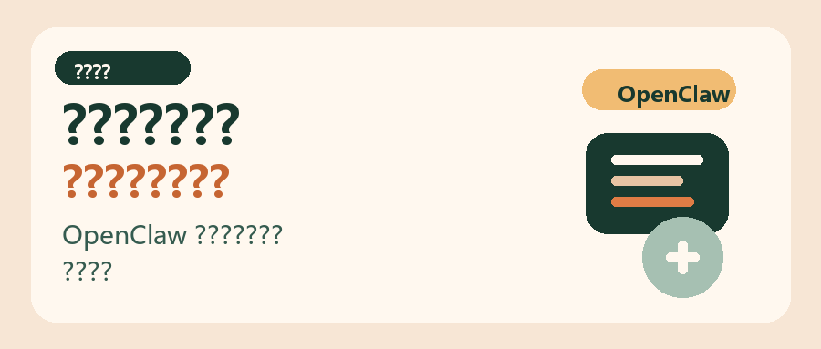
导读
很多人第一次装 OpenClaw，以为把安装命令跑完就行，结果真正卡住的却是后面的初始化选项和模型配置。
这篇按 Windows 新手视角，把安装、初始化、模型接入和重启验证完整顺了一遍。你可以直接照着做，尽量一次装好，不再反复重装。
第一次装这类 AI 编码工具，很多人不是卡在“不会执行命令”，而是卡在“这一步到底该怎么选、跳过会不会有问题、装完后下一步又是什么”。
OpenClaw 也是一样。真正让新手劝退的，往往不是安装脚本本身，而是后面的初始化引导和模型接入。
如果你想把 OpenClaw 一次装好，最省时间的方式不是自己来回试，而是按一条完整路径走完安装、初始化、接入模型和重启验证。
这篇文章我按 Windows 新手视角，把整个流程顺一遍。你能直接拿走 3 样东西：
- 安装命令。
- 初始化时每一步怎么选。
- 接入大模型后，怎么确认 OpenClaw 已经真的跑起来。
如果你用的是 macOS，也不用慌，安装命令我会一并放上；只是下面的截图和操作路径，主要按 Windows 来写。
先说结论：OpenClaw 真正要走完的是 3 步，先安装，再走初始化，最后接上模型并重启网关确认生效。
第一步：先把 OpenClaw 装上
Windows 下，先用管理员身份打开 PowerShell。
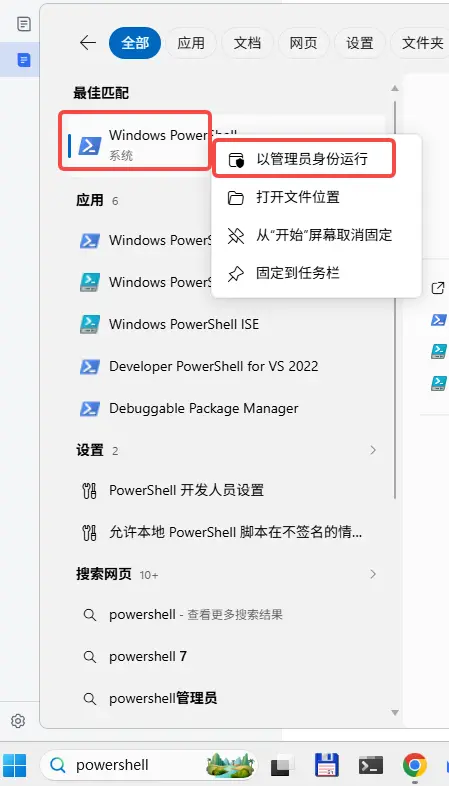
然后执行安装命令：
iwr -useb https://openclaw.ai/install.ps1 | iex如果你用的是 macOS，对应命令是：
curl -fsSL https://openclaw.ai/install.sh | bash这一步本身并不复杂，真正容易让人犹豫的是后面初始化时那些选项。别急，下面我直接按一条更稳的路径带你走。
第二步：初始化时别乱点，按这条路径走更稳
如果安装完成后已经进入引导，就接着往下走；如果你中途跳过了，或者想重新配置，可以手动执行：
openclaw onboard --install-daemon1. 先确认开始引导
进入引导后，先选 Yes，然后选 QuickStart。
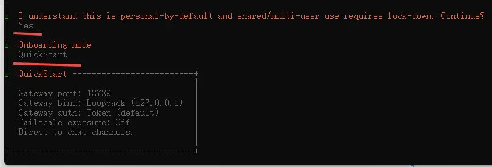
2. 提供商这一步，先按默认思路走
接下来建议按下面的顺序选：
Skip for nowAll providersKeep current
这条路径的好处是，先把环境跑起来，不在一开始就把自己卡死在太细的配置里。
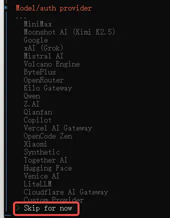
3. 本地工具和附加项，先别展开
接下来两步都可以先选 Skip for now。
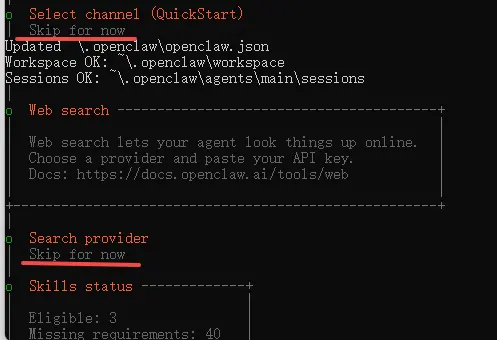
4. 安装 daemon 时确认即可
这里直接选 Yes。
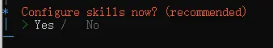
5. 遇到多选项时，先把“跳过”走通
当界面出现多选时，先用空格选中 Skip for now，然后回车确认。
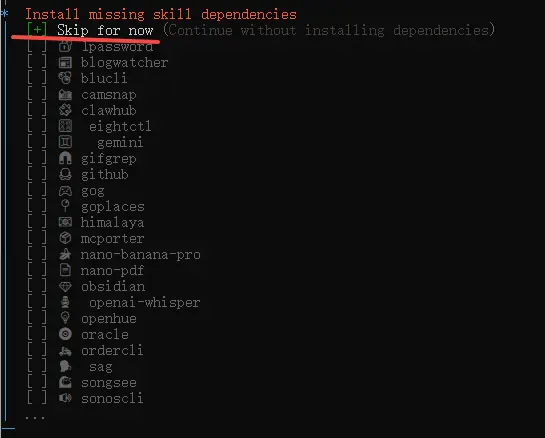
6. API 相关选项，先全走默认的 No
如果你现在的目标只是先把 OpenClaw 跑起来，这一段不需要一上来就展开，保持默认的 No 更省心。
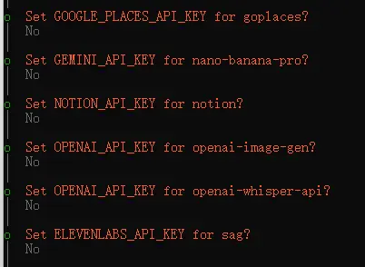
7. hooks 相关的地方，除了跳过项外其余都选上
这里的经验做法是：除了 Skip for now 之外，其他项都用空格选中，再回车确认。
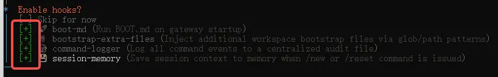
8. 让它打开 Web UI
接下来选 Open the Web UI。
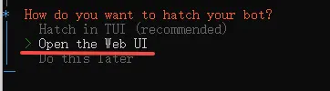
正常情况下，你会进入本地地址：
http://127.0.0.1:18789/chat?session=main
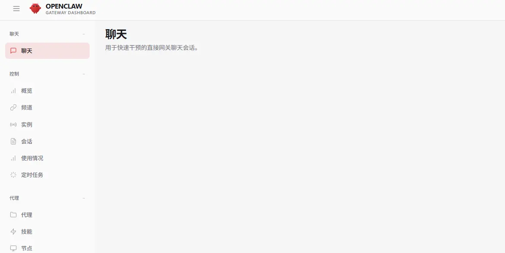
同时要注意一件事：后台会有一个 gateway 进程在运行，这个不要随手关掉。
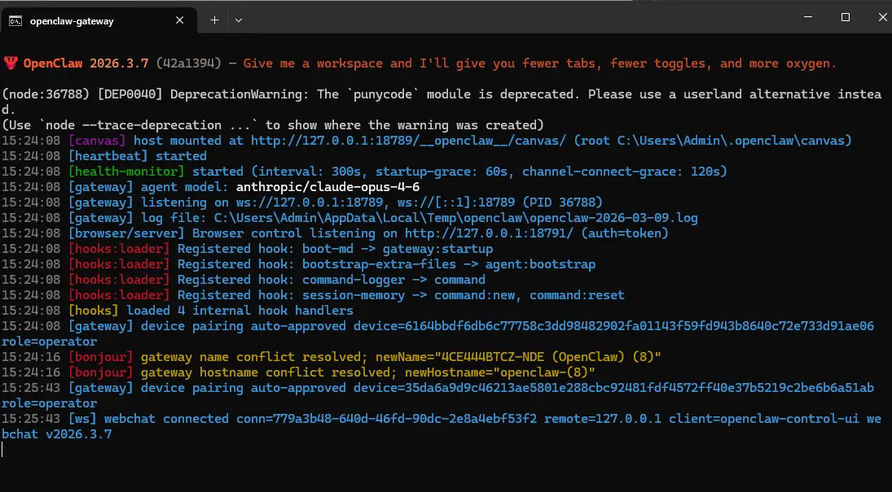
这里的关键提醒：走到这里，其实你已经把 OpenClaw 的壳子装好了。但如果还没接上模型，它能打开，不代表它已经好用。
第三步：把大模型接上，不然能打开也不算真正装好
下面这部分，我用原稿里的火山引擎方案举例。你也可以换成自己手头能用的模型提供商，逻辑是一样的：先准备 API Key，再在 OpenClaw 里把模型供应商和默认模型配好。
先准备好 API Key，然后在 PowerShell 里执行：
openclaw config
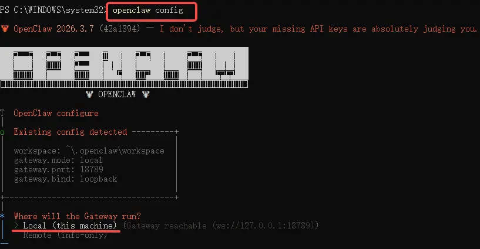
1. 配置入口这样走
在菜单里依次选择：
LocalModel
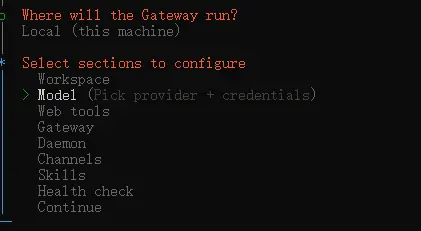
2. 选择模型提供商
这里按原流程选择 Volcano Engine。
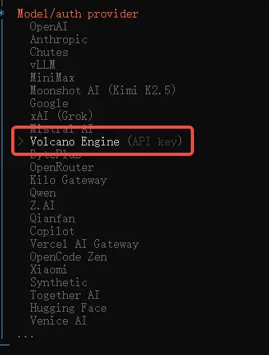
3. 准备粘贴 API Key
当界面提示时，选择 Paste API key now。
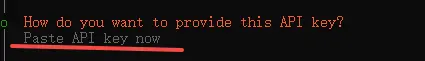
然后把你提前准备好的 API Key 粘贴进去。
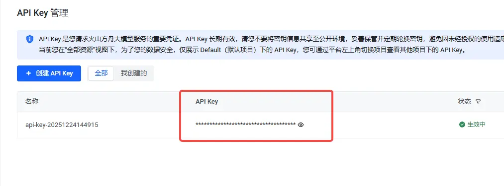
确认无误后继续。
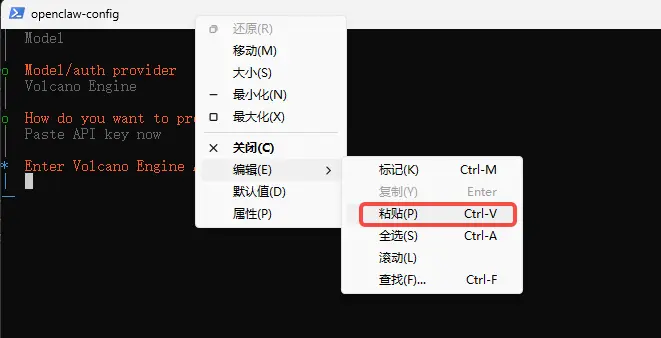
4. 模型名保持默认即可
如果你也是按这个方案来配，模型名保持默认的 volcengine-plan/ark-code-latest 就可以。
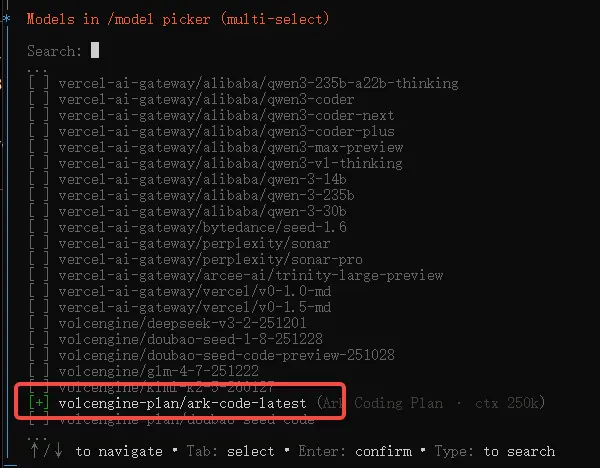
接着选 Continue 完成配置。
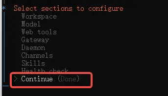
5. 最后重启一次网关
为了让配置生效，回到 PowerShell 执行：
openclaw gateway restart
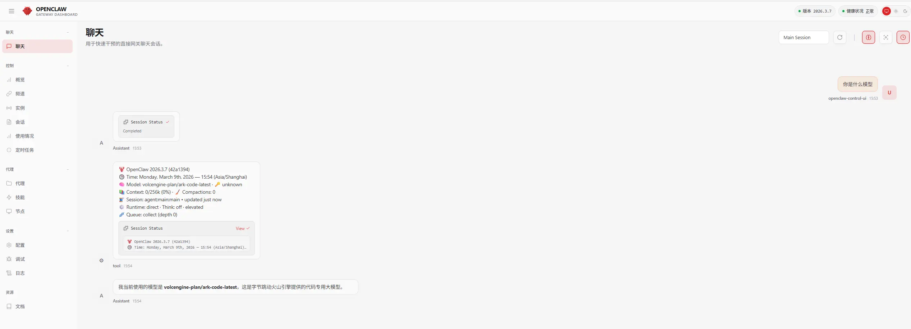
到这里，OpenClaw 才算真正完成了从“装上”到“可用”的闭环。
装完之后，先用这 3 个动作确认自己没有白忙
如果你不想装完以后心里还打鼓，可以立刻做这 3 件事：
- 执行
openclaw dashboard，确认主界面能正常打开。 - 访问
http://127.0.0.1:18789/chat?session=main，确认本地 Web UI 正常。 - 如果界面异常，先别急着重装，优先执行
openclaw gateway restart再看一次。
两个常用命令
重启网关：openclaw gateway restart
打开主界面：openclaw dashboard
最后，把这篇教程压缩成一句话和一个动作清单
如果你想把这篇文章转给朋友，我觉得最值得被转述的一句判断是：
第一次装 OpenClaw，真正劝退人的往往不是安装命令，而是初始化和模型配置；把这两段走顺，OpenClaw 就不难。
如果你只想带走一个最短动作清单，那就是这 4 步：
- 管理员 PowerShell 执行安装命令。
- 用
openclaw onboard --install-daemon走完初始化。 - 用
openclaw config接上模型和 API Key。 - 最后执行
openclaw gateway restart做一次生效验证。
很多工具看起来门槛高，不是因为它真的复杂，而是因为第一次没人把“该怎么选”讲清楚。
OpenClaw 这类工具尤其如此。只看命令，你会觉得很简单；真正自己装时，最需要的是一条有人走通过的路径。
最后想说
如果你正准备第一次上手，希望这篇能帮你少走一点弯路，直接把 OpenClaw 跑起来。